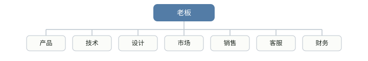
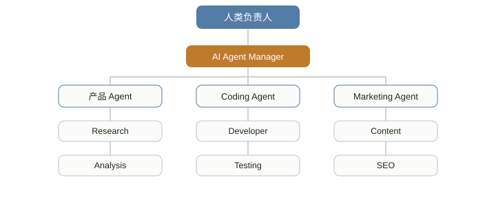

AGI (汎用人工知能)
AGI（Artificial General Intelligence、汎用人工知能）は簡単にこう理解できる：
一つのことしかできない AI ではなく、人間に近い「汎用的な認知能力」を備えた人工知能である。
現在の ChatGPT、Claude、Gemini、DeepSeek などはすでに強い汎用性を示しているが、「それらが AGI かどうか」については、今のところ世界的に統一された実用的な判定基準はない。

AGI と今の AI は何が違うのか？
まず最も分かりやすい比較表を見てみよう：
| 種類 | 能力の特徴 | 例 |
|---|---|---|
| 弱い人工知能（ANI） | 特定の種類の問題を専門に解決する | レコメンドアルゴリズム、AlphaGo、音声認識 |
| 現在の大規模モデル | すでに強い分野横断的な能力を備えている | ChatGPT、Claude、Gemini、DeepSeek |
| AGI | 人間のように学習、推論、転移、計画ができ、大量の未知の問題を独立して解決できる | 現在、広く認められた実現例はない |
| ASI | 人間を全面的に超えるスーパーインテリジェンス | 現在は仮説の段階 |
これまでの AI はどちらかというと専門医のようなものだ：将棋を指させたり、顔を認識させたり、商品を推薦させたりすると、それぞれの分野では強いが、通常は特定のタスクしか得意ではない。
一方、AGI はどちらかというと非常に賢い人のようなものだ：新しい言語を学んだり、未知の専門書を読んだり、プログラムを書いたり、財務諸表を分析したり、製品を設計したり、数学的な推論をしたり、コンピュータを操作したり、ビジネスプランを作成したり、まったく未知のツールを学んだり、失敗の結果に基づいて戦略を調整したり、過去に学んだ知識を新しい問題に転移したりできる。
それはタスクごとに専用モデルを再トレーニングする必要がない。
AGI の核心は実は「知能指数」ではない
多くの人は AGI を「ChatGPT よりはるかに賢いチャットボット」と理解しているが、その理解はあまり正確ではない。
AGI で本当に重要なのは汎用性（generality）だ。
ある AI が数学の試験で100点、プログラミングで100点を取れても、見たことのない問題に直面すると解けなくなるなら、それは AGI とは限らない。
逆に、あるシステムが「新しい問題に直面する → 問題を理解する → 知識を得る → 計画を立てる → 実行する → 結果に基づいて修正する → 最終的にタスクを完了する」という流れを実行できるなら、その方が AGI の核心に近い。
したがって、AGI の重要な能力は通常、1つのチェーンとして要約できる：
知覚 → 理解 → 推論 → 学習 → 計画 → 実行 → フィードバック → 転移
その中でも特に重要なのは学習と転移の能力だ。
人間の最大の強みの一つは転移学習だ：車を運転できれば、トラックの運転を学ぶのはゼロからではない。道路規則、方向制御、速度制御、空間認識、リスク判断といった基礎をすでに持っているので、新しいことを学ぶのがどんどん速くなる。
本当の AGI も同様の能力を備えるべきだ。
「汎用性」は一体どこが汎用的なのか：知能の6つの次元
前の節では汎用性の重要性を述べたが、知能そのものを1つの数字で測るのは難しい。
下のレーダーチャートは知能を6つの次元に分解し、2026年の最先端 AI モデル、AGI 目標水準、人間のおおよその状況を比較したものである：
図・6次元能力比較のイメージ。数値は理解を助けるためのイメージ評価（0〜10）であり、いかなる機関が発表した正確な測定結果でもない。
赤い破線（AGI目標）とオレンジ色の領域（最先端AI）の差は、主に右半分の3つの次元、すなわち分野横断的な転移、自律的な長期計画、継続的な学習に集中していることに注意しよう。
これこそが、後述の「なぜ難しいのか」の節で詳しく説明する難関である。
AGI への道：60年以上の下地
「汎用人工知能」というビジョンは、「人工知能」という学問とほぼ同じくらい古い。
下の表は、広く認められたいくつかの重要な節目を整理したものである：
| 時間 | 出来事 | 意義 |
|---|---|---|
| 1956 | ダートマス会議 | 「人工知能」という言葉が正式に提唱され、学者たちは数十年以内に汎用知能を作り出せると楽観視した |
| 1997 | ディープブルーがカスパロフに勝利 | 将棋しかできない「専門特化型」AIで、能力の境界が明確 |
| 2012 | ディープラーニング登場 | AlexNet が画像認識で従来手法を大幅に上回り、今回の波を巻き起こした |
| 2016 | AlphaGo が李世乭（イ・セドル）を破る | 強化学習が極めて複雑なゲームで人間の直感を超える戦略を見つけた |
| 2017 | Transformer アーキテクチャの登場 | 注意機構がほぼすべての大規模言語モデルの基盤アーキテクチャとなった |
| 2020–2022 | 大規模言語モデルのスケール化 | GPT-3 が「スケールによる能力の創発」を示し、ChatGPT が一般の人々に汎用型対話 AI を触れさせた |
| 2023–2025 | マルチモーダルと推論モデル | モデルが文字、画像、音声を同時に理解し、AI エージェントが自律的に複数ステップのタスクを完了し始めた |
| 2026年から現在まで | 「ギザギザした知能」の現状 | 複雑な科学研究の問題は解けるのに、単純な現実のタスクではしばしば間違える |
「ギザギザした知能」（jagged intelligence）は現在最も典型的な特徴である：能力の分布が極めて不均一で、ある面では人間をはるかに超える一方、別の面では常識さえ欠けている。
なぜ現在の大規模モデルはすでに AGI に非常に似ているのか？
これは現在最も興味深い点だ。
初期の AI は基本的に「1つのモデルが1つのタスクに対応」していたが、大規模モデルの登場後、状況は大きく変わった：1つのモデルがコード作成、文章作成、翻訳、数学、要約、推論、画像認識、ツール呼び出しを同時にできるようになった。
例えば、現在のモデルはすでに次のような完全なチェーンを実行できる：
これはすでに従来の「専用 AI」とはまったく異なる。
そのため、現在多くの人は、私たちはすでに AGI の初期段階に入っているかもしれないと考えている。
しかし問題は、「AGI に似ている」ことは「すでに AGI である」ことと同じではないということだ。
AGI まであとどれくらいかかるのか
これはおそらくこの分野全体で最も見解が分かれる問題だ。
業界リーダーの公の発言は楽観的で近年に集中することが多い一方、研究者コミュニティの調査が示す時期は総じてより遅く、より保守的である。
下の図は、各方面の公の発言と調査による予想時期の範囲を整理したものである：
図・各方面の公の発言/調査による AGI 予想時期の範囲の整理（2026年半ば時点）。棒の範囲は不確実性と主観性が強く、参考までに示したものであり、事実の予測を表すものではない。
これらの数字は「答え」ではなく、異なる方法論に基づく推定である——楽観的な人は技術ロードマップから外挿し、保守的な人は歴史的法則に依拠し、一部は業界の立場に影響されている。
AGI が本当に難しいところは何か？
今日の AI はすでに非常に強いが、「汎用」にはまだいくつかの重要な能力が不足している。
第一：信頼性
大規模モデルの現在の最大の弱点の一つは「できないこと」ではなく、時として非常に自信を持って間違えることだ。
それは非常に合理的に見えて、実際には間違った答えを返すことがある。
AGI が現実世界の重要なタスクを担うなら、この誤り率は大幅に下がらなければならない。
第二：長期的な計画
AI に Python 関数を書かせるのはすでに簡単だが、ゼロから5年間運営できる SaaS 企業を作らせるとなると、難易度はまったく別のレベルだ。
なぜなら、それは1つの完全なチェーンに関わるからだ：
これは実際に「質問に答える」ことから「自主的にタスクを完了する」ことへと変わっている。
第三：現実世界とのインタラクション（身体性知能）
今日のAIは主にデジタル世界に存在している。ウェブページを読んだり、コードを書いたり、APIを呼び出したり、コンピュータを操作したり、ファイルを処理したりできる。
しかし現実世界はもっと複雑だ。例えば「台所に行って宮保鶏丁を作る」には、次のような一連の流れを完了する必要がある：
これにはロボット工学、視覚、触覚、空間理解、運動制御など、多くの問題が関わる。
AGIは必ずしもロボットである必要はないが、実際に物理世界に入ることはより大きな挑戦となるだろう。
上記の3つに加えて、同様に重要な課題がいくつかある：
| 課題 | 説明 |
|---|---|
| 分野横断的な汎化 | あるタスクで学んだ知識を柔軟にまったく新しい場面に応用することで、ゼロから訓練するのではない |
| 継続学習 | 使用しながら新たな知識を蓄積し、「新しいことを学んで古いことを忘れる」破滅的忘却を避ける |
| 常識推論 | 人間が言葉にせずとも互いに暗黙のうちに理解している日常的な論理と物理的直感を理解する |
| アライメントと安全性 | ますます強力になるシステムが常に人間の意図と価値観に沿うようにする |
| 計算能力とエネルギー消費 | 最先端モデルの訓練と実行には膨大な計算資源と電力資源が必要 |
もし AGI が本当に到来したら：機会とリスク
潜在的な影響が大きいからこそ、AGIは人々を興奮させると同時に警戒もさせる。
両面を並べて見てみよう：
| もたらされる可能性のある機会 | 真剣に対処すべきリスク |
|---|---|
| 科学研究を加速し、新薬や新材料の発見期間を短縮する | 雇用構造が大規模かつ急速に再編され、移行の痛みをもたらす |
| 教育や医療相談など高品質なサービスへのアクセス障壁を低くする | システムの目標と人間の意図に乖離が生じる（アライメント問題） |
| 反復的・危険・煩雑な作業を引き受け、人手を解放する | 能力がサイバー攻撃、偽情報、または兵器化に悪用される |
| 個人や企業の「汎用アシスタント」となり、複数ステップのタスクを処理する | 意思決定権力が先進的なシステムを掌握する少数の機関に過度に集中する |
AGI の最も重要な変化は、「AI がもっと賢くなること」ではないかもしれない
むしろ次のことだ：知能が大規模に複製可能な生産要素になり始める。
かつて企業が1人のプログラマーを採用することと、将来AIエージェントを1つ使うことは、経済学的な意味がまったく異なる：
| これまでのやり方 | 未来の可能性のあるやり方 |
|---|---|
| 1人のプログラマー | 1つのAIエージェント |
| 1人分の給与 | 24時間稼働 |
| 8時間/日 | 同時に数十のタスクを処理 |
| 限られた生産能力 | 複製可能、並列実行可能 |
だから今本当に注目すべきなのは、「AIがプログラマーを取って代わるか」という古い問題ではなく、もっと鋭い新しい問題だ：
一人の人間は将来、一体どれだけのAIを管理できるのか？
AGI は「会社」の組織のあり方を本当に変えるかもしれない
従来の会社の構造は、1人のボスの下に部門がずらりと並ぶ形だ：

未来はこうなるかもしれない：1人の人間が少数のAIを担当し、そのAIが一群の実行エージェントを管理する。

この構造では、人間が目標、判断、リソース、最終決定を担当し、AIが大量の実行を担当する。
したがって未来に本当に希少になるのは、「コードが書けるかどうか」ではなく、正しい問題を定義できるか、AIの結果を判断できるか、そして複数のAIを組織化して複雑なタスクを完了できるかどうかだろう。
これがここ数年、AIエージェント、AIアプリケーションエンジニア、FDE、コンテキストエンジニア、AIビルダーといった新しい職種が登場した理由でもある。
AGI ≠ AI Agent
この2つの概念は混同されやすい。
AGIは能力レベルの概念であり、一方でエージェントはシステム形態である。
こう理解できる：大規模モデルが推論能力を備えた後、ツール、記憶、環境認識、計画、実行といった能力が加わることで、AIエージェントが構成される。
一方AGIは、「十分に強い汎用知能」に近い。
エージェントは必ずしもAGIを必要としない——現在ですでに多くのエージェントを構築できる。
同様に、AGIも必ずしもエージェントとして表現される必要はない——高度な汎用認知能力を備えた単なる知的システムであり得る。
では、現在本当に AGI は存在するのか？
現在、広く認められた答えはない。
重要な問題は：AGIは一体どのような基準を達成すべきなのか？
基準が「ほとんどの知識労働を完了できる」ことであれば、今日の一部のトップモデルはすでに非常に近い。基準が「普通の大人のように、まったく未知の環境で自律的に学習し、さまざまな長期タスクを完了する」ことであれば、その距離は明らかに遠い。
だからAGIはむしろ連続したスペクトラムであり、突然点灯するスイッチではない：
現実世界ではおそらく、「今日の10:00にAGIが正式に誕生する」といった日は来ないだろう。
より可能性が高いのは、AIの汎用能力が少しずつ向上し、どこかの段階で、人間がAIはすでに過去に人間だけができた複雑な仕事を大量に独立して完了できることに気づくという形だろう——これこそがAGIの真の意味での到来だ。
AGI に関するよくある質問
以下は初心者が最も混同しやすい質問です。
ChatGPT のような大規模モデルは AGI と言えるのか？
現在の主流の見解ではまだ当たらない。
それらは言語系タスクで驚くべき性能を示しているが、長期計画、継続学習、本当の常識推論などの面ではまだ明らかな弱点があり、能力の分布は均一ではない。
AGI はロボットに自己意識が宿ることと同じなのか？
同じではない。
AGIが論じるのは「汎用認知能力」であり、「意識」はより曖昧で、より哲学的な概念だ。両者は同じものではなく、必然的に一緒に現れるものでもない。
なぜ専門家によって予想時期がこれほど違うのか？
一つの理由は、「何がAGIと言えるのか」について統一された定義とテスト基準がないことだ。
もう一つは、人によって拠り所とする方法が異なることだ：技術的なロードマップから外挿する人もいれば、歴史的法則に基づく人もおり、業界の立場に影響される人もいる。
一般の人は今、AGI に備えて何か準備をする必要があるのか？
不確実な時期について不安になるよりも、実際的な方法はAI能力の限界に注目し続け、既存のツールとの協働を学び、関連する政策や社会的議論について基本的な理解を保つことだ。
一文で AGI を理解する
異なる知能の形態を並べてみると、違いがより明確になる：
| 形態 | 一言の例え |
|---|---|
| 従来のAI | 一つの道具 |
| 現在の大規模モデル | 非常に賢いアシスタント |
| AI Agent | 自分で仕事ができるデジタル従業員 |
| AGI | 未知の問題に直面し、自己学習、推論、計画、実行、修正ができる汎用知能体 |
さらに一歩進んで、このような知能がほとんどすべての認知領域で全面的に人間を超えるなら、そのとき議論されるのはもはやAGIだけではなく、ASI（Artificial Superintelligence、人工超知能）。
その他の拡張本当に注目すべきなのは、「AGIがいつ出現するか」という日付ではなく、AIの汎用能力が絶えず人間に近づくとき、どの仕事、企業、個人の能力がまず再評価されるかである。
クリックしてメモを共有
ノートは本記事の内容の拡張である必要があります！
記事投稿は、こちらをクリック
登録招待コードの取得方法
ノートを共有する前にログインが必要です！
登録招待コードの取得方法